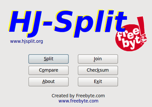

LXSplit
Dieser Artikel wurde für die folgenden Ubuntu-Versionen getestet:
Ubuntu 14.04 Trusty Tahr
Zum Verständnis dieses Artikels sind folgende Seiten hilfreich:
HJ-Split  und lxSplit sind Programme, um große Dateien in mehrere kleinere Dateien aufzuteilen (splitten). Dabei findet im Gegensatz zu Packprogrammen keine Komprimierung statt. Eine große Datei wird lediglich in beliebig viele Dateien zerlegt, damit diese z.B. jeweils auf einen Datenträger passen.
und lxSplit sind Programme, um große Dateien in mehrere kleinere Dateien aufzuteilen (splitten). Dabei findet im Gegensatz zu Packprogrammen keine Komprimierung statt. Eine große Datei wird lediglich in beliebig viele Dateien zerlegt, damit diese z.B. jeweils auf einen Datenträger passen.
HJ-Split bietet eine grafische Oberfläche und unterstützt Dateigrößen von über 100 Gigabyte, zusätzlich eine MD5-Prüfsumme und den Vergleich von Dateien. lxSplit lässt sich dagegen über die Kommandozeile bedienen. Es ist von HJ-Split inspiriert, bietet aber nicht dessen Funktionsumfang. Eine Alternative zu lxSplit ist das Kommandozeilen-Werkzeug split.

HJ-Split¶
Um HJ-Split verwenden zu können, muss man sich lediglich von der Herstellerseite die Datei hjsplitlx.tar.gz herunterladen und entpacken [1]. Die Datei hjsplit im Ordner hjsplitlx kann direkt im Terminal gestartet [2] werden:
hjsplit
Für eine systemweite Installation nutzt man die Anleitung im Artikel opt und erstellt bei Bedarf einen Menüeintrag [3].
Bedienung¶
| HJSplit | |
| Menüpunkt | Beschreibung |
| "Split" | Über "Input file" die zu teilende Datei auswählen. Die Größe der Teildateien auswählen z.B. 2 GiB und mit "Start" den Teilungsprozess starten. |
| "Join" | "Input file" anwählen und die erste Teildatei - erkennbar an der Endung .001 anwählen. Die Zusammenführung über "Start" einleiten. |
| "Compare" | Zwei Dateien ("File 1" und "File 2") miteinander vergleichen |
| "Checksum" | Über "File" die Datei auswählen für die eine Prüfsumme erstellt werden soll. "Start" leitet den Vorgang ein. Über "Copy" wird diese in die Zwischenablage kopiert. |

lxSplit¶
Installation¶
Das Kommandozeilenprogramm kann durch das folgende Paket installiert werden [4]:
lxsplit (universe)
 mit apturl
mit apturl
Paketliste zum Kopieren:
sudo apt-get install lxsplit
sudo aptitude install lxsplit
Bedienung¶
Teilen¶
Um eine Datei in einzelne kleinere Dateien mit jeweils 5 MByte zu unterteilen, werden neben dem Parameter und dem Dateinamen die zu unterteilende Größe angegeben. Der Programmaufruf im Terminal sieht wie folgt aus:
lxsplit -s DATEINAME.TYP 5M
Im Verzeichnis findet man nach dem Teilen der Ursprungsdatei fortlaufend nummeriert (DATEINAME.TYP.001) unter identischem Namen die Einzeldateien, welche eine ungefähre Größe von 5 MiB aufweisen. Alternativ stehen als Dateigrößen KByte und Byte zur Verfügung.
Zusammenführen¶
Zur Wiederherstellung der Ursprungsdatei ruft man das Programm unter Angabe der ersten Einzeldatei auf:
lxsplit -j DATEINAME.TYP.001
Alternativ kann auch cat verwendet werden.
Hinweis:
Um die "Ursprungsdatei" wieder herstellen zu können, sind sämtliche Einzelteile zwingend erforderlich. Diese müssen sich alle im selben Ordner befinden.
Parameter¶
| Parameter | |
| Parameter | Beschreibung |
-s | Datei in vorgegebene Größe teilen (split) |
XM | Unterteilung in Megabyte (MB) - Größe X |
XK | Unterteilung in Kilobyte (KB) - Größe X |
XB | Unterteilung in Byte - Größe X |
-j | Dateien mit dem angegebenem Namen zusammenfügen (join) |

- Erstellt mit Inyoka
-
 2004 – 2017 ubuntuusers.de • Einige Rechte vorbehalten
2004 – 2017 ubuntuusers.de • Einige Rechte vorbehalten
Lizenz • Kontakt • Datenschutz • Impressum • Serverstatus -
Serverhousing gespendet von